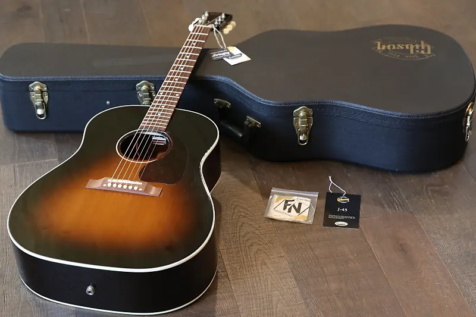
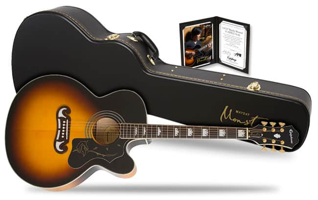

Despues de haber tenido informacion sobre las partes de este instrumento te daremos una serie de marcas en guitarra, que verdaderamente prometen calidad en cuanto a sus intrumentos se trata, son marcas de gran renombre entre musicos.
1. Martin

La empresa la fundó un emigrante alemán llamado Christian Friedrich Martin en 1833 en Nazareth, Pennsylvania. Desde entonces fabrican guitarras acústicas de la máxima calidad que utilizan artistas de la talla de John Mayer, Ed Sheeran o Eric Clapton.
Con este modelo Martin ha repensado lo que puede hacer una guitarra electroacústica, añadiendo comodidad y facilidad de tocar a la ya contrastada calidad de la marca estadounidense. Creadas y fabricadas a mano por artesanos expertos, las guitarras Martin utilizan una combinación de nuevos diseños y técnicas, reservando los métodos y fórmulas usados tradicionalmente por su fundador a finales del siglo XIX.
Se encuentran en una línea media alta de fabricación y precio. Por ello seguramente no sean la opción más económica que podrá encontrar en tiendas como Musicopolix, pero son instrumentos para toda una vida usados por músicos de distintos estilos alrededor del mundo. Definiendo géneros musicales como el clásico y el country hasta el blues, el folk y el rock acústico.
2. Gibson
Fundada en 1902 en Michigan por Orville Gibson, la marca es conocida por su modelo Les Paul de guitarra eléctrica (entre otros), pero también cuenta en su catálogo con algunas acústicas que podríamos clasificar como modelos clásicos.
Apodada “El caballo de batalla”, ha sido utilizada por innumerables guitarristas desde que Gibson la introdujo en 1942, siendo la acústica más vendida de la marca. La Gibson J-45 Standard ofrece un sonido con un rango dinámico increíble, medios cálidos y graves contundentes.
3. Taylor

Seguimos con una de las marcas más jovenes de la lista. Creada en 1972 por Bob Taylor y Kurt Listug, se especializa en guitarras acústicas y guitarras eléctricas semihuecas. Podrás ver a artistas como Taylor Swift utilizándolas.
Taylor GS Mini Mahogany
Concebida como una guitarra de viaje, esta acústica es mucho más que eso. El gran sonido que esconde pese a su reducido tamaño la han convertido en una guitarra muy popular.
4. Takamine
Esta empresa japonesa se fundó en 1959 y se especializa en guitarras acústicas desde el comienzo. Es una de las marcas más prestigiosas y las utilizan músicos como Jon Bon Jovi y Bruce Springsteen entre otros.
Takamine GN71CEBSB
Guitarra con forma auditorium y cutaway para acceder más facilmente a las notas más agudas del mástil. Acabado sunburst espectacular y sonido en consonancia.
5. Epiphone
La empresa la fundó Anastasios Stathopoulos en 1873 en la ciudad de Nashville, cuna del country y de la música americana. En 1957 Gibson la compró, conviertiéndola en su segunda marca.
TEpiphone EJ-200CE
Esta guitarra rinde homenaje a la clásica Gibson SJ-200. Cuenta con cuerpo super jumbo y detalles icónicos como el puente con la legendaria forma moustache y el golpeador decorado.